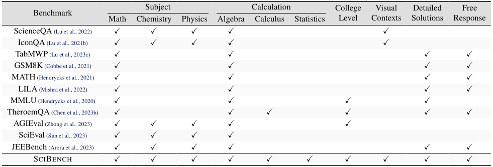
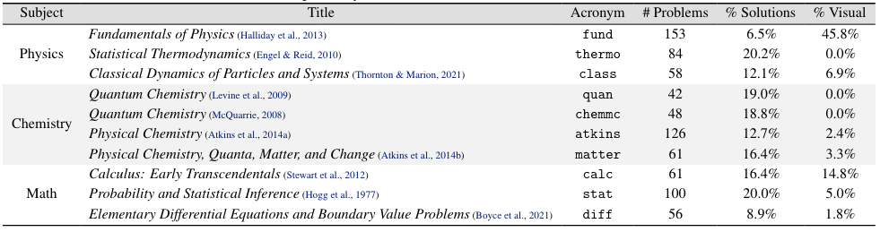
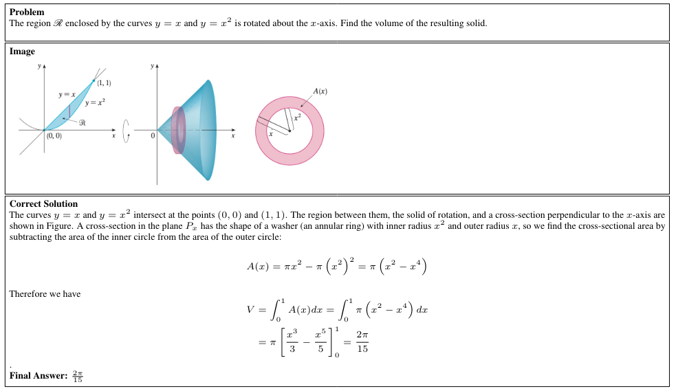
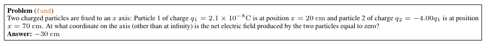
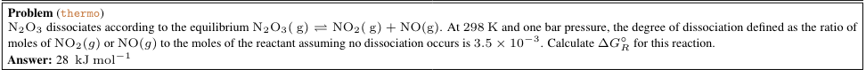
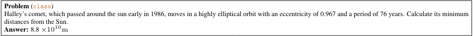

Chemistry: atkins, chemmc, quan, matter
Physics: fund, class, thermo
Math: diff, stat, calc
Leaderboard on textbook dataset
SciBench Dataset
Overview
SciBench is a carefully curated dataset of college-level scientific problems, including 789 problems collected from widely-used textbooks in college-level Chemistry, Physics, and Mathematics courses. Distinct from existing benchmarks, all of the problems are open-ended, free-response questions that demand multi-step reasoning abilities, the understanding of scientific concepts, the retrieval of domain-specific knowledge (e.g., equations and theorems), and complex numeric computation capabilities (e.g., calculus or differential equations). Besides that, our dataset includes a multimodal subset of 94 problems that incorporate visual elements (such as graphs and figures) as additional contexts, which enables of the evaluation of multimodal LLMs.
To align our evaluation with realworld scenarios, we provide a separate, closed dataset that encompasses 103 problems from seven sets of midterm and final exams from collegiate Computer Science and Math courses. To ensure the integrity of our evaluation, these datasets have been manually extracted from PDF documents and formatted into LaTeX documents, thereby minimizing the risk of their leakage in LLM training data.

Comparison of SciBench with other benchmarks. "Algebra" refers to high-school level arithmetic computations; "Calculus" involves using integrals and differentials; "Statistics" focuses on applying statistical and probability concepts like bivariate distributions.

Summary of textbook dataset. We report the number of total problems, percentage with detailed solutions, and percentage with visual elements in columns four to six respectively.
To evaluate the capabilities and analyze the limitations of Large Language Models (LLMs) to solve scientific computing problems, we collect a new dataset consisting of college-level textbooks and course exams in a variety of domains. This section details the dataset construction process.
Data selection criteria.Our dataset aims to improve the previous benchmarks by including more challenging problems. Specifically, the selected dataset should fulfill the following requirements:
- Inclusion of college-level problems.The chosen problems demand a solid understanding of domain-specific knowledge, adept calculation skills, and the ability to perform complex numerical computations.
- Inclusion of detailed solutions.To facilitate a thorough analysis of the limitations of LLMs, detailed solutions should be provided as well, which could facilitate a finergrained examination of the capacity of LLMs to handle complex problem-solving tasks.
- Inclusion of visual elements.In real-world, many scientific problems require the interpretation and integration of both textual and visual information. The included problems should thus contain visual elements (such as figures) in the contexts.
- Inaccessibility in text formats.To ensure an unbiased evaluation, questions should not be readily accessible online and cannot be easily extracted or transformed into text. This aims to mitigate any potential information leakage from the exposure of LLMs to pre-existing online question banks, such as those found in standardized tests like the SAT exams.
- Assessment of advanced problem-solving capabilities.The problems to benchmark should not be confined to basic arithmetic operations like addition and multiplication. Rather, they should enable evaluating the capability of LLMs in performing advanced computations such as calculus and differential equations.
Examples
One example for each textbook evaluated with SciBench

An example from the textbook Calculus: Early Transcedentals

fund textbook

thermo textbook

class textbook
One example for each visual context type required in  SciBench
SciBench